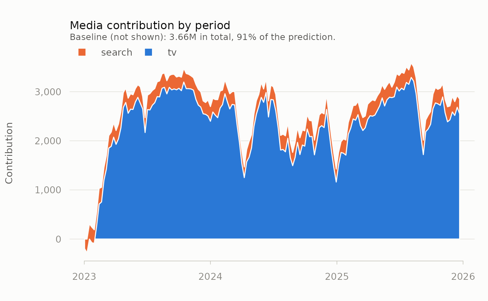
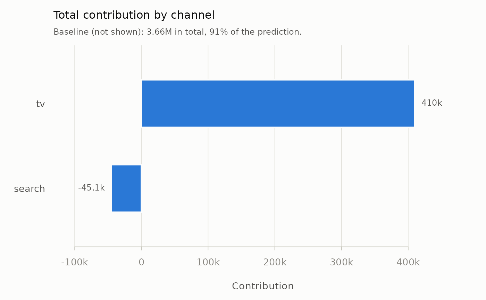

type = "time" stacks each channel's contribution period by period, which
shows when media worked; type = "total" compares channel totals. The
baseline is left out of both, because it is usually several times the size
of all media combined and would flatten everything else; its total is
reported in the subtitle.
Arguments
- x
A data frame from
contributions().- type
"time"(the default) or"total".- ...
Graphical arguments:
main,xlabandylabreplace the defaults, andcolgives one colour per channel, in the order the channels first appear inx. Others are ignored.
Details
Periods are drawn in sorted order: dates and date-times on a date axis, numbers at their values, and text labels in sort order, so pass a factor to set the order of text labels. With more than eight channels the time chart keeps the seven largest and draws the rest together as "Other", with a message. A missing or infinite contribution is counted as zero, and a row with a missing period is left out of the time chart, each with a warning.
Examples
data(mm_weekly)
north <- mm_weekly[mm_weekly$geo == "north", ]
ch <- c("tv", "search")
tr <- attr(mm_weekly, "truth")
spec <- lapply(stats::setNames(ch, ch), function(k) list(
adstock = list(decay = tr$decay[[k]]),
saturation = list(half_max = tr$half_max[[k]], shape = tr$shape[[k]])))
media <- transform_plan(north[ch], spec)
fit <- lm(north$revenue ~ ., data = media)
contrib <- contributions(media, fit, index = north$date)
plot(contrib)

plot(contrib, type = "total")
